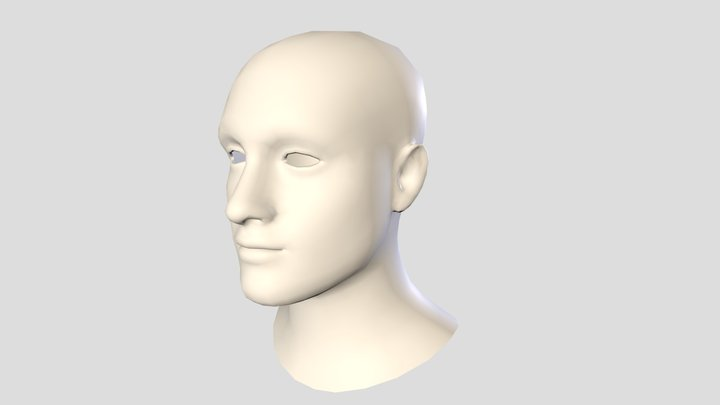

A scene from the movie "Rocky IV"A still from "The Matrix Revolutions"
Based on my love for action movies and boxing, I wanted to create something that could simulate the slow motion punches we see in films like "The Matrix" and "Rocky". My initial proposal was to create a simulation in VR where the user could punch a model of a head in real time, but for the sake of implementation, I had to scale back to this idea's base components. This is what lead me to implement soft body collisions as a way to begin to implement this idea and demonstrate what I have learned in the course as well.
IMPLEMENTATION
Assignment 5: PBD Cloth
Implementation of my final project is based heavily from Assignment 5: PBD Cloth. In order to implement the soft body collisions seen within my project, I used the logic from Assignment 5 as a base. I took the implementation of position based dynamics, a mass-spring system, varying stiffness, and collision detection and shaped it to fit my needs. Taking advice from Dr. Sueda, I began by implementing a sphere that could impact the ground and through much tinkering, was able to find settings that I believed created a realistic soft body collision. After finding the right settings, I created objects that could be thrown at the soft body such as planks and bullets. This would allow me to view the collisions on both a small and large scale.
IMPROVEMENT

Future implementation could possibly involve loading in models
The current implementation of my final project involves the creation of various soft body spheres of varying stiffness. Each one, when impacted by a thrown object, behave differently due to these differences. Future work could include the addition of a way to read in .obj files which would allow any item the user desires to be converted to a soft body. In addition, the use of varying stiffness on different parts of a soft body could be implemented as well. For example, if a human head were to be converted to a soft body, we could alter the stiffness on various parts of the face to imitate areas where more bone versus where there may be none such as the forehead and cheeks.
DEMONSTRATION
Thank you for visiting my website
You can contact me at spenceryoungcho@tamu.edu.
Feel free to reach out if you have any questions or just want to say hello!